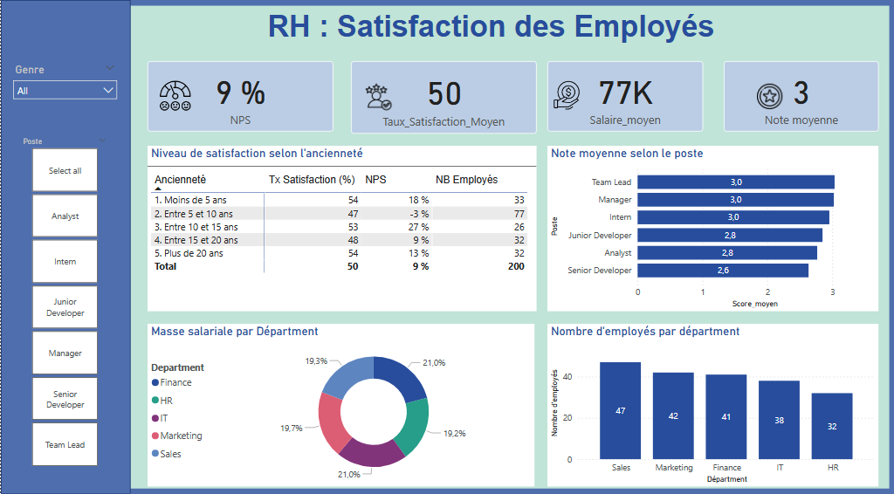
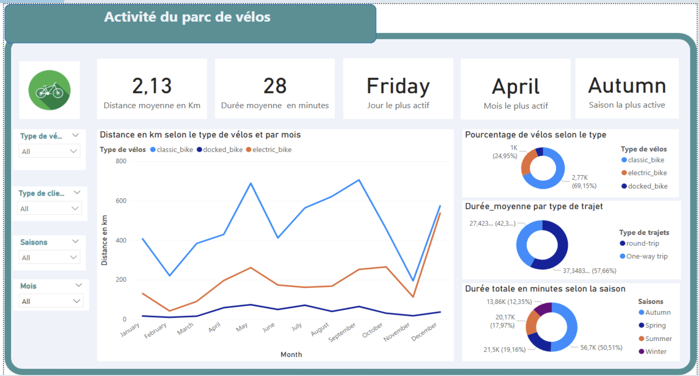

Laetitia Palogo Compaoré
Projet RH Niveau de satisfaction Collaborateurs
Je partage ici un projet réalisé en seulement 48 heures.
L’objectif était de concevoir un tableau de bord interactif pour un cabinet de conseil, dans le but de l’aider à optimiser le bien-être et la performance des employés de ses clients.
Ce dashboard permet d’analyser divers indicateurs de bien-être au travail et de performance.”
Lien vers le dataset : Employee Productivity and Satisfaction HR Data
Étapes du projet :
-
Étape 1 : Documentation sur les indicateurs clés de la satisfaction et de la productivité des employés (KPI).
- Informations générales des employés : salaire moyen, âge moyen, ancienneté moyenne.
- Satisfaction : note moyenne, catégories (Détracteurs, Passifs, Promoteurs), calcul du ENPS ou NPS.
- Productivité : productivité moyenne, nombre de projets terminés, Note moyenne de feedback
-
Étape 2 : Analyse exploratoire des données (EDA).
L’EDA permet de détecter les erreurs, d’identifier les valeurs aberrantes et de trouver les relations intéressantes entre les variables.
C'est la phase de qualification de la donnée.
Voir le notebook (mon code) : EDA Mission Data RH
-
Étape 3 : Création du dashboard sur Power BI.

Projet Cyclistic - Entreprise de partage de vélos à Chicago
Dans ce projet, j’ai réalisé un dashboard interactif pour une entreprise de partage de vélos.
L’objectif était de proposer, à travers une approche data-driven, un outil d’aide à la prise de décision pour le directeur de l’entreprise. Le besoin métier était d’analyser le comportement des utilisateurs afin d’identifier des leviers pour augmenter le nombre d’abonnés.
Étapes du projet :
-
Étape 1 : Documentation sur les indicateurs clés dans le domaine du transport,
et plus particulièrement du vélo.
- Analyse des données générales sur l’utilisation des vélos.
- Étude du comportement des clients.
- Identification des leviers pour l’augmentation des abonnements.
-
Étape 2 : Analyse exploratoire des données (EDA).
-
Étape 3 : Création du dashboard sur Power BI.

Projet Moving Frame
Je présente ici un projet réalisé en équipe.
L’objectif était d’implémenter un modèle de Machine Learning afin de générer des recommandations de films.
C’était un exemple concret d’utilisation d’un modèle de Machine Learning.
Ma principale contribution :
- Traitement des données issues de différentes bases de données (qualification des données).
- Contribution à l’ingénierie du modèle de Machine Learning.
Outils et méthodologies utilisés :
- Python (Pandas, DuckDB, Seaborn, Scikit-Learn), Streamlit, méthodologie Scrum (Agile).
Cliquez ici.